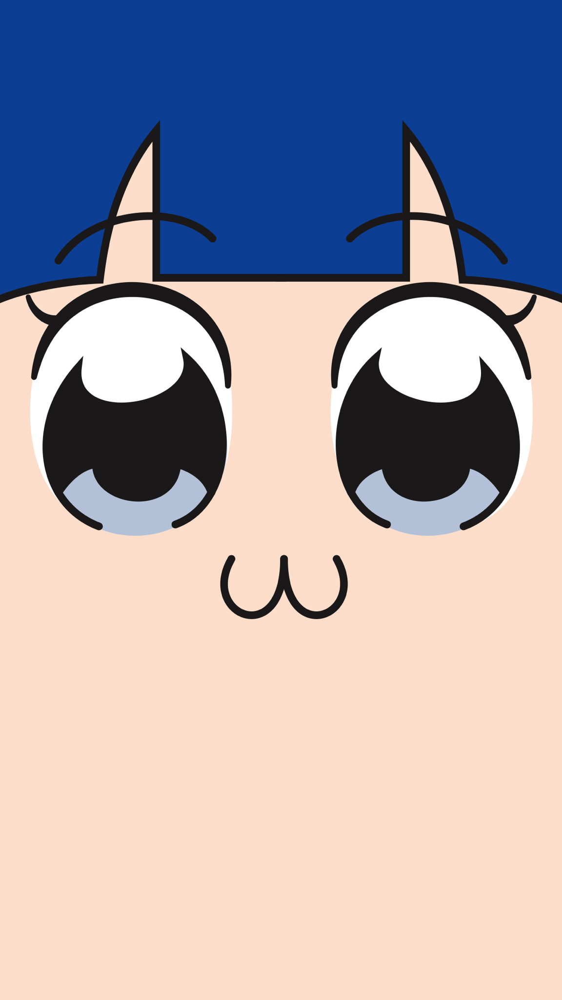

靜態網頁
Home
(current)
TKU 課堂實作
w1-intro
w2-Girls' Frontline -- table demo
w2-myclass
w3-TKU60 淡江大戲
w3-div
w4-TTT
w4-Blog
w5-Image Gallery
w6-pet website
w7-galleryTemplate
自製區
Girls' Frontline
POP子 （ポプ子 （ポプこ））
14歲的女孩，身高較矮，金髮雙馬尾，嘴巴很壞，討厭另類的女子。雖然喜歡煽動別人，但是自己如果被惹到就會生氣。笑起來很鬼畜。
PIPI美 （ピピ美 （ピピみ））
14歲的女孩，身高較高，藍色長髮及腰，下巴很長。負責吐槽POP子的角色。通常情況下處於痴呆狀態。喜歡POP子。言行有時很帥氣。
